Rolling Sky WebEditor Instructional Manual
Please do not be overwhelmed by the amount of information on this page. If you want to be knowledgeable of the WebEditor, be sure to read all of the sections. All information about the WebEditor will be documented here. The instructions are very detailed, but if you feel like something should be changed, DM sqdl_#8597 on Discord.0: Website Basics
0.1 Your Data
Your level data is not stored on a server, which means you are responsible for saving your level file to your device. We do not save any sensitive data.Any settings that are saved will be saved as cookies on the webpage. We do not abuse cookie use, and you can verify this for yourself by entering the DevTools of any Chromium based browser (ex. Google Chrome) or FireFox and navigating to the tab labeled "Application" and scrolling down to "Cookies."
Google Analytics will be active on the page at all times. This is for us to better understand users.
0.2 Device Dependent Features
Features on the WebEditor may vary depending on your device. If you have any questions about device-dependent features, please DM sqdl_#8597 on Discord.0.3 Dialog Prompt Permissions
The WebEditor uses dialog prompts to recieve information. If you are on a mobile device and have accidentally pressed "Supress Dialogs," simply save your level to your device and repload the page.1: Getting Started
1.1 Creating a Blank Level
To create a blank level at a specified length, navigate to the section labeled "Create Blank Level."Enter your level length into the input box. Please note that you cannot change this value after level creation, since it would be easy to accidentally delete a part of your level.
Once you have made sure that the level length is correct, click the button below the input box labeled "Create Blank Level." 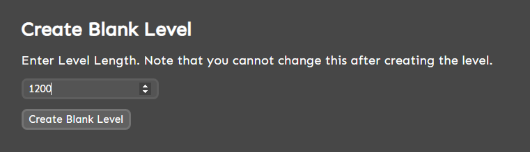
1.2 Uploading a Level
To upload a level, navigate to the section labeled "Upload Level."Select your level file by clicking on the file input. UI may vary between operating systems. You may upload either a Rolling Sky TXT Level or a Tiled TMX file. Depending on the size of the level, the time the website takes to process and load the level file may vary.
Once you have chosen your level, click the button labeled "Create Level From Upload." 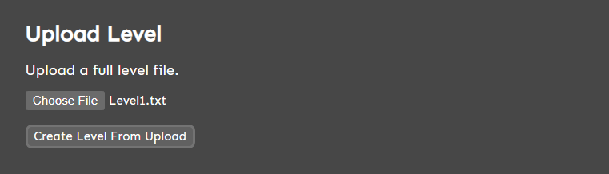
1.3 Editing an Existing Rolling Sky Level
To edit a level from the game, navigate to the section labeled "Load Existing Level."Start typing the level name in the input box. The input box is case insensitive, meaning that capitalization is not important. Feel free to use the autocomplete to assist with your level choice.

1.4 Understanding Game Logic
Rolling Sky tile logic is slightly different than Rolling Sky Remake, so if you are transitioning over from Rolling Sky Remake, this section will be essential to editing.One of the most different features is movers. Movers in Rolling Sky Remake have custom mover tiles that can be separated from regular ground tiles. In Rolling Sky, mover arrows connect to ground tiles and require mover separators to prevent mover arrows from connecting to nearby ground tiles. Some conditional movers have sides that won't connect to ground tiles. These sides are represented as blue borders in the sqdldev tileset.
Rolling Sky also requires GeoBuffer render tiles. These tile create a section where the GeoBuffer limit can be reached. The WebEditor can generate a somewhat functional GeoBuffer file. Please refer to Section 3.2.
2: Level Editing
2.1 Picking a Tile
To pick a tile, simply click a tile in the pallet. You can scroll down to see more tiles. 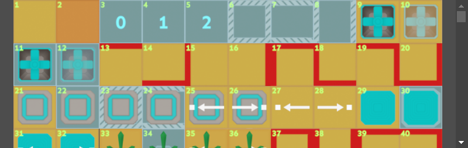To automatically scroll to a tile in the pallet, navigate to "Level > Find Tile" on the header or using the "Ctrl + F" keystroke. Type in the tile ID you want to scroll to. After clicking "Ok" on the prompt, a green outline should materialize and shrink to the size of the tile in the pallet, making it easier to spot the tile you've focused on. 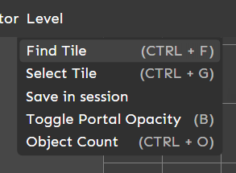
Another way to choose a tile (mobile only) is to tap the tile preview on the far right of the header. 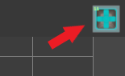
2.2 Starting Portal
The portal is not included in the level export, instead, it is there for you to see where you should start placing tiles. You may toggle the portal's half-transparent graphic by navigating to "Level > Toggle Portal Opacity" on the header, or press the "B" key on your keyboard. 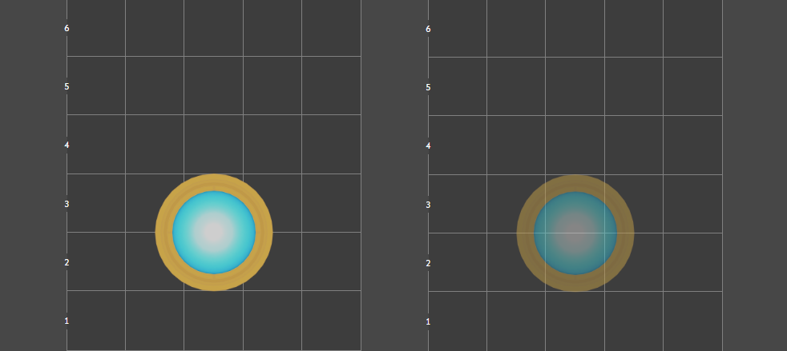2.3 Edit Mode and Lock Scroll
The Edit Mode and Lock Scroll checkboxes make it more convenient to edit on mobile where the screen width is almost always minuscule. These two checkboxes are located on the hotbar, right above the tile pallet. 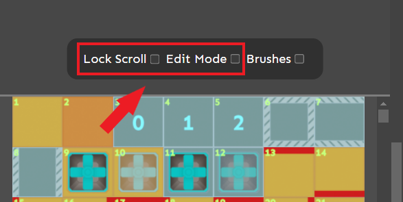The Edit Mode checkbox toggles the ability to draw on the canvas. This checkbox should remain unchecked when you want to scroll through a level without accidentally drawing on the canvas. The checkbox should almost always stay checked on desktop.
To scroll with Edit Mode on, simply swipe in the margin (where the color is darker than the canvas).
The Lock Scroll checkbox toggles the ability to scroll on the canvas. Lock Scroll can be helpful when you want to zoom in on mobile without scrolling away. It is recommended that the Edit Mode checkbox remain unchecked if you are using Lock Scroll to zoom in on mobile.
2.4 Brushes
WebEditor brushes help you edit levels with ease. To open the brushes menu, check the checkbox on the hotbar that is labeled "Brushes," and to close the menu, simply uncheck the checkbox. Currently, the WebEditor has 5 brushes. The brushes are explained in detail below.2.5 Toggle Zoom (Experemental)
The Toggle Zoom button allows you to zoom out to 50%. This can help with previewing more of your level at once. This feature is currently experemental. 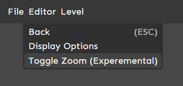2.6 Display Options Menu
The Display Options menu allows you to toggle theme options to better visualize how your level will look. This does not affect your level file, it is purely visual. This menu can be accessed by navigating to "Editor > Display Options" on the header. Apply your changes by pressing the button labeled "Submit". 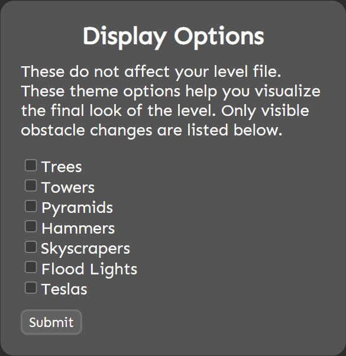3: Exporting Your Level
3.1 Exporting Your Level
To export your level, navigate to "File > Export" or use the keystroke "Ctrl + S.";
To download your level, enter a name for your level file in the input box under the "Name File" section. 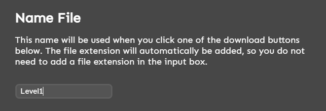
To export a Rolling Sky level that can be inserted into Rolling Sky Unlocked or used in Porygon Axolotl's RSPC Edit Guide, click the button labeled "Download .TXT" under "Download .TXT Level." If the download button does not work, use the texbox below the paragraph to copy the level text which you can copy and save into a TXT file. 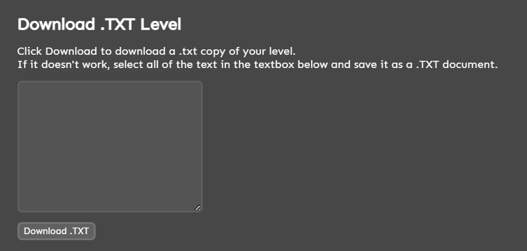
If you want to edit the level file in Tiled, make sure you either have your own tileset or have downloaded the tileset package from the page (After downloading the tileset package, unzip the file and place it in the same folder you place the download from this page).
After you either download the package or you chose your own tileset, click the button labeled "Download .TMX" under "Download .TMX Level." 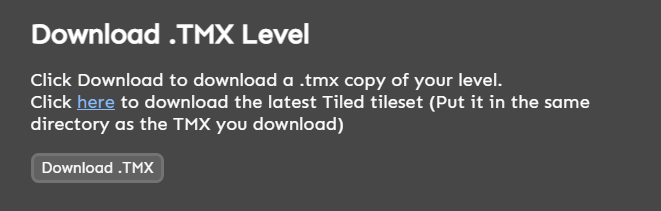
3.2 Setting Up Your GeoBuffer File
The Copy GeoBuffers feature is still in beta testing, and you should not rely on it. Please report any bugs to sqdl_#8597 on Discord.We recommend using the Object Count and manually matching GeoBuffers using DeclanHugo's GeoBuffers List.
To access the Object Count menu, navigate to "Level > Object Count" in the header or use the hotkey "Ctrl + O."; 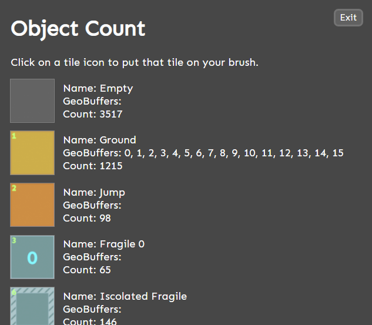
3.3 Play-Testing
To test a level on RSPC, you use Rolling Sky Unlocked.To load a level into Rolling Sky Unlocked, download the level from Section 3.1 into the "Buckets > Levels" folder with the name "LevelX," with X being the ID (Not level index, IDs can be looked up here). On Rolling Sky Unlocked Android, GeoBuffer files don't affect the GeoBuffer types or limits.
Note that Rolling Sky Unlocked will loop the level file if the level you have imported does not reach the set length of the level.
3.4 Have fun!
We hope you have fun editing, playing, and judging each other's levels!Enjoy the level editor :) - sqdldev (Lead Developer, WebEditor Guide Writer)